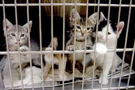
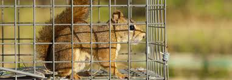

Mollie's Animal Shelter
About Mollie's Animal Shelter
This is one of the biggest animal shelters in the country Kenya. Here we keep all types of animals from Dogs to Puppies and Cats. It was started about 5 years ago with omly a litter of kittens to tend. Over the five years, it has grown to be one of the best places that animals can call home (in their language of course!).
Here is a list of animals we keep.
- Dogs
- Cats
- Reptiles
- Parrots
- Small animals like mice
Most of the animals we keep are stray dogs and cats
Animals up for Adoption
Every year, we put some animals up for adoption. this is to reduce the population of the animals in the shelter but most importantly it is to enable families to adopt the animals as their pets!
Rufus: The white Puppy

He is quite jumpy and likes being around peopple.I must warn you that he is a heavy eater! Get ready to buy two extra bags of food every month. Rufus is a fast learner and loves to folllow rules.
Spoties: The Spotted Kittens

We call them spotties because they are always together everywhere (its a sibling thing)! You can adopt three of them for the price of two!
Brown: The Squirrel

Brown is a sophisticated squirrel. If you adopt him you should consider buying him a squirrel taxido!
Slow: The Tortoise

Slow is fast when you place food nearby! Get yourself Slow and you will have a friend who will never leave fast enough!